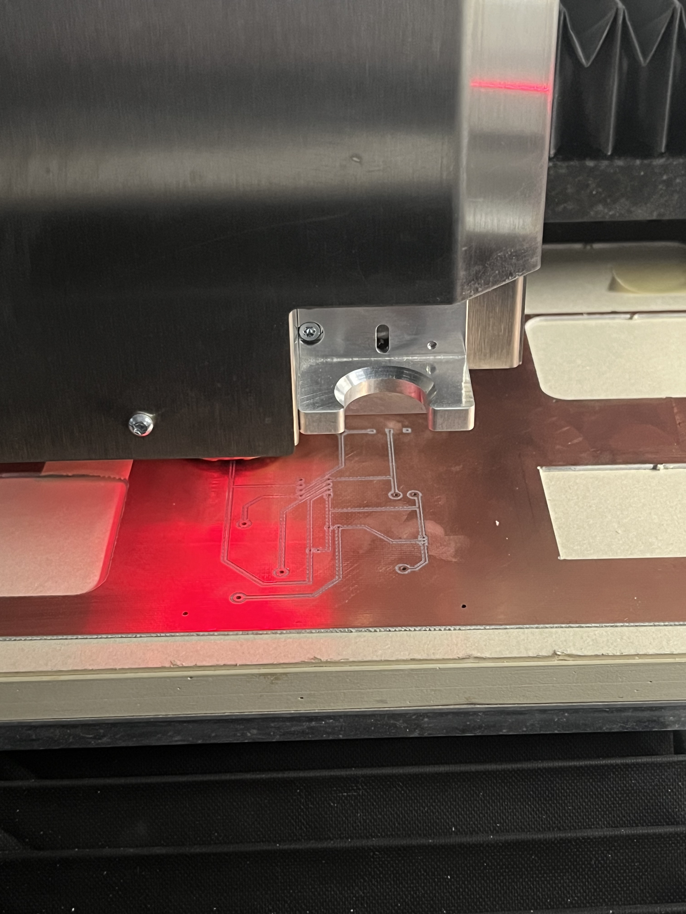

Introducción
Este proyecto consistio en el diseño de un circuito, la generación de trayectorias para fresado, el corte de la placa de cobre y, finalmente, la soldadura de los componentes electrónicos.
Materiales y Herramientas
- Material: Placa de Cobre FR-4
- Componentes: LED rojo, 3 resistencias, bornera, capacitor de 47, transistor npn22n2222, LM555, potenciometro
- Software de Diseño PCB: Easyeda Online Editor
- Hardware: Fresadora CNC pequeña LPKF
- Herramientas Auxiliares: Soldador, estaño, extractor de humos.
Procedimiento
- Diseño del Circuito y PCB: Se diseñó el esquemático y se realizó el diagrama de la PCB, asegurando que las pistas tuvieran el ancho adecuado para el fresado.
- Generación de archivo Gerber: Usando el software Easyeda, se generaron las trayectorias para el fresado de las pistas y el corte del contorno de la placa.
- Fresado (Corte): Se calibró la máquina y se cortó la placa de cobre, separando las pistas. 
- Perforación y Limpieza: Se perforaron los agujeros y se limpió la placa de los residuos de cobre.
- Soldadura: Se soldaron los componentes electrónicos a sus respectivas ubicaciones en la placa.
- Mencion especial: No salio facil, de hecho, pase mas de 20 horas en el laboratorio previamente menciononado

Resultados y Conclusiones
El circuito funcionó correctamente al ser energizado despues de 5 intentos fallidos. La calidad de las pistas fue adecuada, permitiendo una soldadura limpia de los componentes.
Conclusión
El fresado CNC ofrece una manera rápida de prototipar PCBs, aunque requiere una calibración precisa del eje Z y mucho tiempo. Se logró integrar el diseño electrónico con la fabricación mecánica para obtener un circuito funcional.